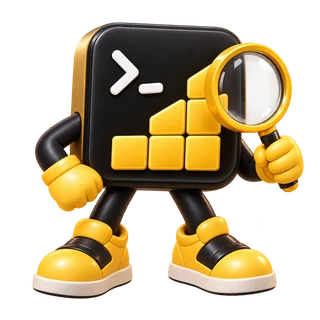
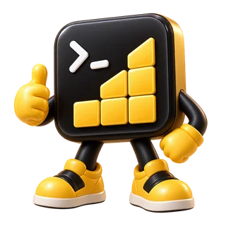
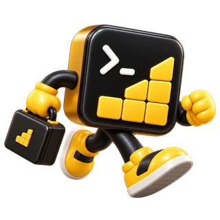
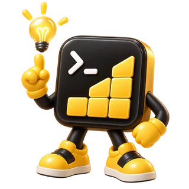
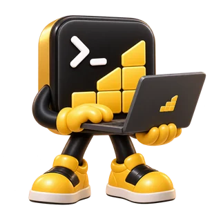
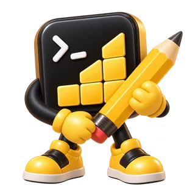
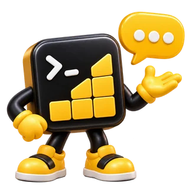
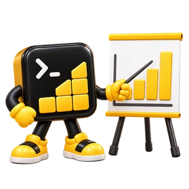
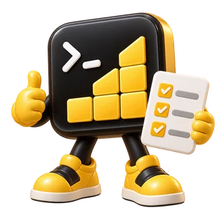
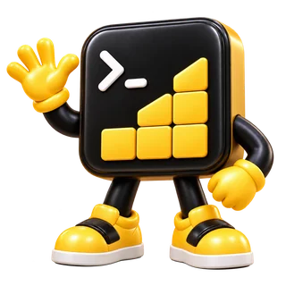

GENERAL AI
GPT / Claude
Gemini / DeepSeek
AI WORK OPERATING SYSTEM
한 번의 지시를, 검증된 실행으로.
목표를 이해하고 필요한 기억을 불러옵니다. 일을 나누고 가장 적합한 AI·Agent·PC·도구를 조합해, 실행부터 QA·결과물·다음 작업까지 이어갑니다.
THE FA Core가 일을 운영하고, Hi THE FA가 나와 연결하며, 나의 AVA들이 역할에 맞게 협업하는 경험을 준비합니다.
현재 체험은 Interactive Demo입니다. 실제 AI 연결과 실행은 환경·권한에 따라 달라집니다.
도입 문의 →“주문·재고·정산을 연결하는
업무 시스템을 개발하고,
권한·동시성·장애 복구까지 검증해줘.”
THE MISSING CONNECTION

GPT, Claude, Gemini, Copilot을 각각 따로 사용합니다.
도구가 바뀔 때 회사와 프로젝트를 다시 설명합니다.
좋은 답 뒤에 복사·전달·실행은 사람이 이어갑니다.
“완료했습니다”와 실제 적용·검증은 다릅니다.
흩어진 자원과 끊어진 업무를,
하나의 Core로 연결합니다.
ONE CORE. ALL CAPABILITIES.
THE FA Core가 제품의 중심입니다. 통제, 업무 완성, 기억과 검증은 모두 Core 안에서 함께 작동하는 내부 엔진입니다.
하나의 AI를 바꾸는 일이 아니라,
일이 연결되는 방식을 바꾸는 일.

BuildUP은 THE FA Core 내부의 실행 엔진입니다.
AI RESOURCE MESH
General AI부터 Coding Agent, Local AI와 실행 환경까지. Core는 작업에 필요한 능력을 기준으로 자원을 조합합니다.

GPT / Claude
Gemini / DeepSeek
Codex / Claude Code
GitHub Copilot / Factory / Gemini CLI
Ollama / Local LLM
Local Coding Model / Embedding
사용자 PC / Cloud Worker
Browser / GitHub Worker
Drive / Gmail / Calendar
GitHub / Supabase / Vercel / Netlify
Slack / Notion / Figma / Canva / MCP
공개 사이트의 연결 상태 목록이 아닙니다. 실제 사용은 연결·권한·Provider 가용성을 확인한 뒤 결정합니다.
THE FA ROUTER
하나의 요청에도 여러 능력이 필요합니다. Core가 단계마다 품질·비용·속도·가용성·보안과 이전 실행 근거를 비교해 적합한 경로를 선택합니다.

ROUTING EXAMPLE · Provider 미연결
“경쟁사 30곳을 조사하고,
투자자용 시장분석을 만들어줘.”
ONE REQUEST. SEVEN CONNECTED STEPS.
각 단계를 선택해 한 요청이 결과와 기억으로 이어지는 과정을 살펴보세요.
“주문·재고·정산 업무 시스템을 개발하고, 권한·동시성·장애 복구까지 검증해줘.”
01 / 07 · REQUEST
주문·재고·정산의 업무 규칙과 시스템 경계를 확인합니다. 권한, 데이터 정합성, 장애 복구를 완료 조건으로 정의합니다.
EXECUTION ENGINE
목표를 실행할 일로 나누고, 실행·검토·수정·재검증을 연결합니다. 필요한 재개 지점과 결과 근거를 함께 남깁니다.

“만들었다”와
“실제로 잘 작동한다”를 구분합니다.
CODE WRITTEN ≠ VERIFIED
COMPLETED ≠ VERIFIED
COMPANY MEMORY / CONTINUITY
회사와 프로젝트의 결정, 최근 결과, 재개 지점을 필요한 문맥으로 복구합니다. 과거 대화 전체를 반복해서 읽지 않고, 지금의 일에 맞는 Fast Context를 연결합니다.
연속성 · 빠른 복구 · 불필요한 문맥 비용 감소 · 이전 결과 재사용

MULTI-AI COLLABORATION
전략 제안, 반론, 자료 검증을 나누고 Core가 합의점·쟁점·추가 검증·다음 행동을 정리합니다.

전략 제안
반론·검토
자료·근거 검증
출처와 시점을 확인하고 사실을 다시 검증합니다.
DATA MISMATCH가정과 판단 기준을 비교하고 쟁점을 남깁니다.
SEMANTIC DISAGREEMENT여러 AI의 같은 결론도 자동으로 사실이나 사람의 승인으로 간주하지 않습니다. Provider 역할은 설명용 예시입니다.
PC / BROWSER / WORKERS
허용된 PC·Cloud·Browser Worker를 실행 자원으로 활용합니다. 파일, 터미널, Git과 연결 도구를 권한 안에서 움직이고, 결과를 확인합니다.
공개 사이트는 제품 구조를 보여주는 Preview입니다. 실제 PC 제어와 외부 도구 연결을 제공한다고 표시하지 않습니다.
RESOURCE GOVERNOR
반복·정리는 로컬 또는 저비용 자원부터. 중요한 판단은 고성능 자원으로. 필요할 때 다른 AI의 검토를 더합니다.
Local-first · Cost-aware
실제 비용 절감률을 보장하지 않습니다.

Local AI / 저비용 Provider
고성능 AI / 전문 Agent
다른 AI 검토 / Test / Runtime
HI THE FA · EXPERIENCE LAYER · NEXT
모바일에서는 목표·음성·브리핑·승인·알림을. PC에서는 파일·코드·Local AI·도구를. 같은 작업의 상태와 근거를 이어가는 경험을 준비합니다.
모바일·PC 앱과 기기 간 연속 사용은 Planned입니다. 현재 제공 범위는 홈페이지 Demo와 초대 전용 샌드박스입니다.
BLACK BOX / EVIDENCE · EVIDENCE LAYER
Hi THE FA가 나와 연결한다면, Black Box는 판단과 실행을 확인할 근거를 연결합니다. 모든 대화를 무조건 수집하는 기록장이 아닙니다.

현재 샌드박스에서는 시험 작업·결과 파일·QA·영수증을 확인합니다. 외부 업무 결과 연결은 Next입니다. 개인 원문과 공유 근거의 분리, 보존 범위는 도입 시 별도 합의가 필요합니다.
AVA · MY ROLE-BASED AI · PREVIEW
AVA는 선택한 기록, 목표, 선호, 문맥과 권한을 바탕으로 일하는 역할별 개인 AI입니다. GPT·Claude·Codex·Local AI는 AVA가 사용하는 실행 자원입니다.
개인 기억을 자동 수집하거나 인격을 복제하지 않습니다. AVA 생성·학습·버전 저장은 아직 제공하지 않는 Preview입니다.
Console의 제품 흐름 살펴보기 →THE FA WORLD · LONG-TERM VISION
기획 · 개발 · 디자인 · 사업 · 검토 역할이 목표 → 계획 → 역할 분담 → 자원 선택 → 실행 → 상호 검토 → 근거 확인의 흐름으로 협업하는 비전입니다.
서로 다른 소유자의 협업은 별도 동의와 범위·기간·권한·예산 설정을 전제로 합니다. 현재 World 참여와 AVA 간 자동 실행은 제공하지 않습니다.
YOUR PRODUCT WORKSPACE
프로젝트, 현재 작업, 실행 자원, 진행 단계와 승인·결과물을 먼저 봅니다. 필요할 때 고급 실행 정보까지 펼쳐봅니다.
지점별 권한, 동시 주문과 장애 복구를 함께 검증하는 개발 예시
실제 운영 정보는 실행 환경 연결 후 확인합니다.
ONE CORE. YOUR WORK.
설계, 분석, 운영과 복구. 목표에 따라 달라지는 실행 흐름을 살펴보세요.
주문·재고·정산의 흐름을 설계하고, 권한과 데이터 구조부터 API·관리 화면까지 개발합니다. 동시 주문, 중복 처리와 장애 복구를 시험해 결과를 확인합니다.
설계 문서 · 실행 가능한 코드 · 통합 테스트 · 검증 보고서
활용 흐름 예시입니다. 실제 자동화 범위는 연결된 시스템, 권한, 승인 정책에 따라 달라집니다.
TRUST & CONTROL
위험 작업은 사람의 승인 경계를 통과합니다.
승인 필요 → 승인 후 실행같은 작업을 여러 AI가 동시에 덮어쓰지 않습니다.
한 작업 범위 · 한 수정 권한실행 종료와 실제 검증 완료를 구분합니다.
실행 완료 → QA → 검증 완료결과물, QA와 완료 근거를 함께 남깁니다.
Artifact + QA + ReceiptBEYOND THE ANSWER
설계부터 개발, 검토와 다음 작업까지.
사람이 하나씩 이어 붙이던 과정을
Core가 맥락과 근거로 연결합니다.
회사와 프로젝트의 결정, 이전 결과를 현재 작업에 연결합니다. 도구가 바뀌어도 필요한 문맥을 다시 쌓는 일을 줄입니다.
선택한 기억 · 현재 목표 · 다음 행동역할에 맞는 AI·도구를 선택하고 허용된 범위에서 실행합니다. 문제가 생기면 기록한 지점과 대체 경로로 이어갑니다.
자원 선택 · 승인 · 실행 · 재개코드와 결과물에 테스트·검토·실행 근거를 함께 남깁니다. 확인한 결과와 결정은 다음 작업에서 다시 사용할 수 있습니다.
결과물 · 검증 · 실행 영수증 · 기억제품이 지향하는 업무 흐름입니다. 실제 실행 범위는 연결된 자원과 권한에 따라 달라집니다.

YOUR NEXT WORK STARTS HERE
지금 사용하는 AI와 도구, 앞으로 등장할 실행 자원까지.
하나의 업무 실행 체계로 연결합니다.
나의 AVA 팀에서 THE FA World까지, 근거와 통제를 갖춘 협업을 준비합니다.